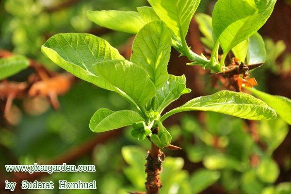
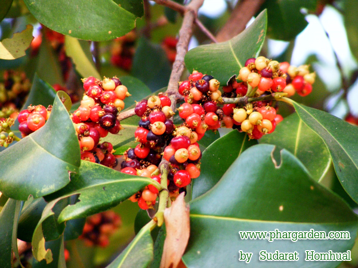
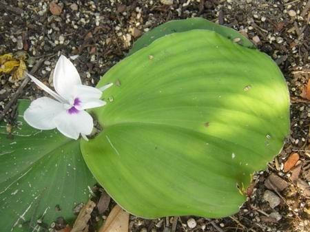

1.ถั่วดินโคก

ภาพจาก:https://www.disthai.com/17236425/พิษนาศน์
3.มะตูมนิ่ม
ภาพจาก:https://puechkaset.com/มะตูม/
5.เร่ว

ภาพจาก:https://medthai.com/เร่ว/
7.กระทุ่มนา

ภาพจาก:https://medthai.com/กระทุ่มนา/
9.จุกโรหินี

ภาพจาก:https://medthai.com/จุกโรหินี/
11.ชิงชี่

ภาพจาก:https://medthai.com/ชิงชี่/
13.นางแย้มป่า

ภาพจาก:https://www.samunpri.com/นางแย้มป่า/
15.พังคี

ภาพจาก:https://medthai.com/พังคี/
17.สะค้าน

ภาพจาก:https://www.teaoilcenter.org/สะค้าน/
19.อบเชยไทย
ภาพจาก:https://thai-herbs.thdata.co/page/อบเชยไทย/
21.เถาเอ็นอ่อน

ภาพจาก:https://medthai.com/เถาเอ็นอ่อน/
2.เทพทาโร

ภาพจาก:http://clgc.agri.kps.ku.ac.th/resources/new-fragrant/cinnamomum.html
4.มะหาด

ภาพจาก:https://www.disthai.com/17066265/มะหาด
6.หัวร้อยรู

ภาพจาก:https://medthai.com/หัวร้อยรู/
8.ขันทองพยาบาท

ภาพจาก:https://www.disthai.com/17189420/ขันทองพยาบาท
10.ชะเอมไทย

ภาพจาก:https://www.samunpri.com/ชะเอมไทย/
12.ตับเต่า

ภาพจาก:https://www.samunpri.com/ตับเต่านา/
14.ปลาไหลเผือก

ภาพจาก:https://medthai.com/ปลาไหลเผือก/
16.มะคังแดง
ภาพจาก:https://apps.phar.ubu.ac.th/phargarden/main.php?action=viewpage&pid=91
18.สารภีป่า

ภาพจาก:https://medthai.com/สารภีป่า/
20.เฉียงพร้านางแอ
ภาพจาก:https://apps.phar.ubu.ac.th/phargarden/main.php?action=viewpage&pid=218
22.เปราะหอม
ภาพจาก:https://www.disthai.com/17063057/เปราะหอม